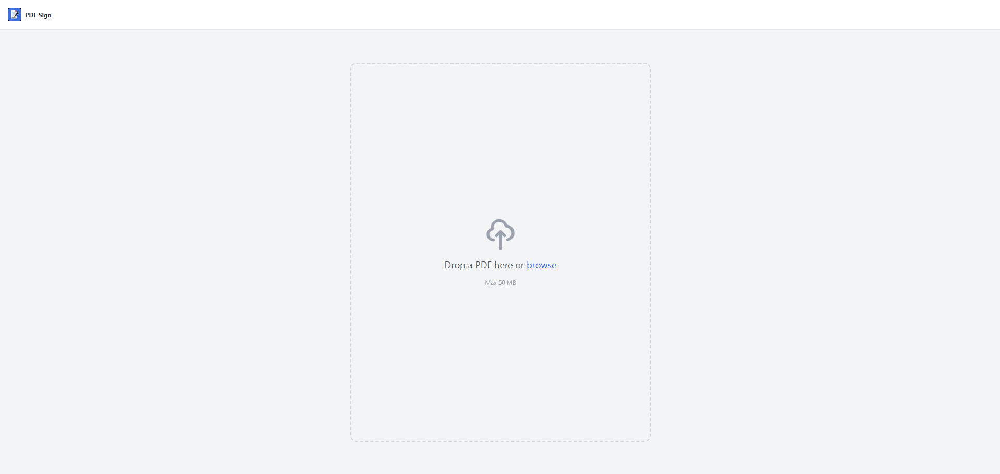
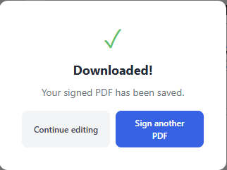

1Drop your PDF

Contract, NDA, invoice, rental agreement — any PDF up to 50 MB
→
2Sign & fill

Draw signature, add text in 5 fonts, place anywhere on any page
→
3Download

Signed PDF saved to your device — never touched a server